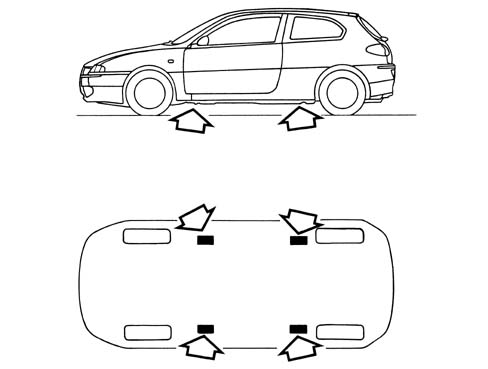

Vehicle lifting points
- Path
- Technical Data > General information > VEHICLE TOWING AND LIFTING POINTS > Vehicle lifting points
- Kind
- technical data / specifications
- Applies to
- all engines; all production periods
- Interactive page
- https://sloeber94.github.io/elrnDB-a147/en/#/3022800
Applies to: all engines; all production periods
The vehicle should only be lifted at the side with the ends of the arms or the workshop lift in the areas illustrated in the diagram about 40 cm from the wheel arch profile.
